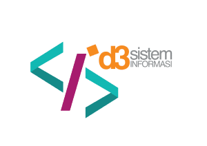

Logo Program Studi
Tentang Kami
D3 Sistem Informasi merupakan salah satu jurusan yang ada di Fakultas Ilmu Terapan yang berfokus di bidang yang menggabungkan ilmu komputer dengan bisnis dan manajemen. Lulusan sistem informasi memiliki prospek yang sangat bagus bekerja di berbagai instansi pemerintah dan perusahaan. Mereka dicari untuk kebutuhan membangun ataupun mengembangkan software yang bermanfaat untuk kelangsungan pekerjaan. Lulusan sistem informasi juga dapat bekeoa sebagai analisis keamanan software dan juga quality control ataupun maintenance sebuah sistem di perusahaan maupun pabrik
Prospek Karir
IT Consultant Junior System Analyst, IS Developer, Web Developer, Pentester/Software, Tester Mobile, Database Developer, UI/UX Designer, Data scientist Digital Entrepereneur